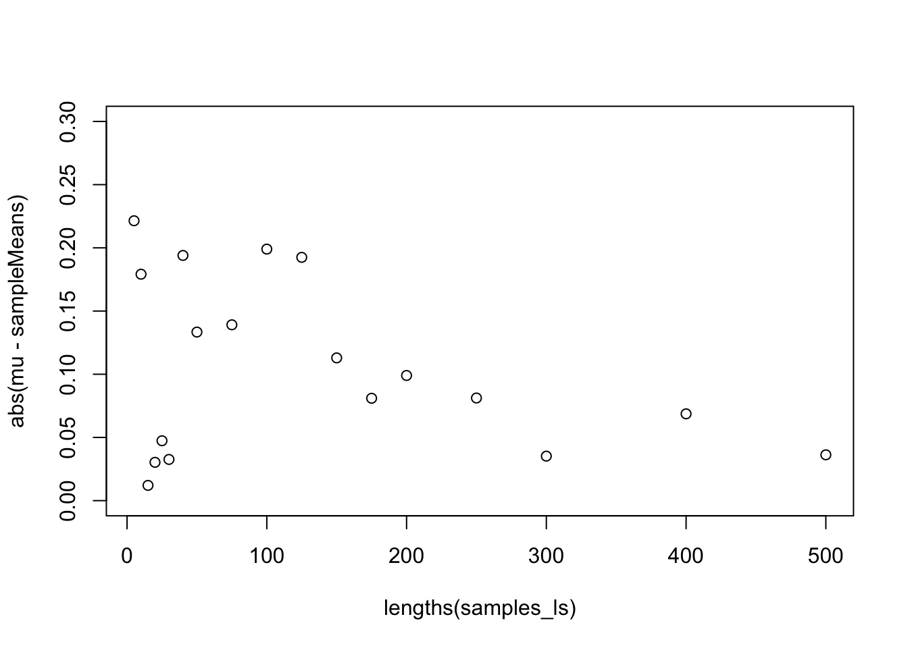

# install.packages("gapminder")
library(gapminder)
library(tidyverse)
gapminder_df <- as_tibble(gapminder)Lesson 12: Functional Iteration with purrr
Review
What did we learn last class?
- Control Flow in R
- Creating Functions
- Best Practices
- Function Scoping
Overview
In this lesson, we will cover the following:
- Review vectors
- Review functions
- What are “Functionals”?
- Applying Functions to Vectors
- Split-Apply-Combine
Because the point of this lesson is to meaningfully connect functions and vectors, we will review both concepts before adding new material.
Learning Resources
This lesson borrows data from some material from Washington State University’s Department of Statistics. The link to the zipped data (1.7Mb unzipped) is https://drive.google.com/drive/folders/1HDeAg0EtqE_T1PuRBjKsczR8_ev3XKIA.
For this lesson, we will use a simple subset of the Gapminder data. Also, we will need the tidyverse again:
Exercises
- Download the compressed file from the link above; unzip it on your desktop.
- Rename the
data/subdirectory in the folder above topurrr_example_data/; move it to your data folder for this class. - Delete the compressed and unzipped folders from your desktop.
Review: Vectors
Recall that most of the data you see in R is a vector (either atomic or non-atomic) in some way. In math, vectors have a precise definition, but they are much more loosely defined in R: vectors are simply an ordered collection of objects, themselves in an object.
We have atomic vectors:
x <- c(1, 3, 5)We have non-atomic vectors, including lists:
me_ls <- list(
forname = "Gabriel",
surname = "Odom",
age = 35
)
me_ls$forname
[1] "Gabriel"
$surname
[1] "Odom"
$age
[1] 35and tibbles:
gapminder_df# A tibble: 1,704 × 6
country continent year lifeExp pop gdpPercap
<fct> <fct> <int> <dbl> <int> <dbl>
1 Afghanistan Asia 1952 28.8 8425333 779.
2 Afghanistan Asia 1957 30.3 9240934 821.
3 Afghanistan Asia 1962 32.0 10267083 853.
4 Afghanistan Asia 1967 34.0 11537966 836.
5 Afghanistan Asia 1972 36.1 13079460 740.
6 Afghanistan Asia 1977 38.4 14880372 786.
7 Afghanistan Asia 1982 39.9 12881816 978.
8 Afghanistan Asia 1987 40.8 13867957 852.
9 Afghanistan Asia 1992 41.7 16317921 649.
10 Afghanistan Asia 1997 41.8 22227415 635.
# ℹ 1,694 more rowsAll the elements of any vector can be accessed by their position:
me_ls[[1]][1] "Gabriel"gapminder_df[1, c(1, 3, 4)]# A tibble: 1 × 3
country year lifeExp
<fct> <int> <dbl>
1 Afghanistan 1952 28.8This idea of using position to access the elements of a vector is important for this lesson, and we will bring it up again shortly.
Review: Functions
Last lesson we learned functions, how they work, and the best practices for writing them. Recall that functions have 3 main components:
- Name: object in the environment (Global Environment for example) that “holds” the code we write
- Arguments: inputs of the function; what does the user need to provide in order for the function to work
- Body: what the function does; that is, the code that we write
We have written a few versions of a “data summary” function in the past. Here is one version, specifically designed for numeric data:
MyNumericSummaryFun <- function(x_num) {
c(
Min = min(x_num),
Q1 = quantile(x_num, 0.25),
Median = median(x_num),
Mean = mean(x_num),
Q3 = quantile(x_num, 0.75),
Max = max(x_num),
StdDev = sd(x_num),
IQR = IQR(x_num)
)
}
# Test
MyNumericSummaryFun(0:10) Min Q1.25% Median Mean Q3.75% Max StdDev IQR
0.000000 2.500000 5.000000 5.000000 7.500000 10.000000 3.316625 5.000000
Exercises
- Identify the name, arguments, and body of the function above.
- If we need to remove missing values from the
x_numvector, how could we modify the function above? - Sketch out the documentation for this function.
Functionals
So far, we our interactions with functions have usually been to call them directly; that is,
output <- a_function(input1, input2, ...)Functionals give us the ability to abstract this relationship between inputs, outputs, and the work done in between. Functionals are specific helper functions which take in another function as one of its arguments. So, our interaction with functionals looks more like one of these:
# A Functional form
output <- DO(THIS = a_function, TO = c(input1, input2, ...), WITH = {options})
# Another Functional form
output <- DO(TO = c(input1, input2, ...), THIS = a_function, WITH = {options})In the two sets of code above, the object output would probably contain the same information, but it might be in a different “form” (think about the class() function). Also, the ordering of the THIS (the function) and the TO (the function arguments) may be reversed, and sometimes the WITH options are mixed in with the function arguments (i.e., there isn’t a separation between the TO and WITH parts of the functional).
An Example
Thankfully, before we get completely lost, we have actually seen something similar to a functional already. Let’s use the Gapminder data and find the 10 countries with the smallest maximum life expectancy:
gapminder_df %>%
group_by(country) %>%
summarise(best_life_expectancy = max(lifeExp, na.rm = TRUE)) %>%
slice_min(order_by = best_life_expectancy, n = 10)# A tibble: 10 × 2
country best_life_expectancy
<fct> <dbl>
1 Sierra Leone 42.6
2 Angola 42.7
3 Afghanistan 43.8
4 Liberia 46.0
5 Rwanda 46.2
6 Mozambique 46.3
7 Guinea-Bissau 46.4
8 Nigeria 47.5
9 Congo, Dem. Rep. 47.8
10 Somalia 48.2Here, the summarize() function is like a functional. It says “find the life expectancy column, and take the maximum of it”; that is, it is similar to
DO(TO = lifeExp, THIS = max(), WITH = {na.rm = TRUE})
Important
Functionals are functions which take in another function as one of its arguments..
Applying Functions to Vectors
Now that we have reviewed vectors, functions, and learned some basics of functionals, we can start applying our functions to our data. Recall that most objects in R are either functions or vectors. We saw that the FOR loop controller was capable of evaluating a function with each element of a vector (for instance, adding up all the values of a vector using a FOR loop). We also saw that, for most cases, R’s vectorised nature makes using FOR loops unnecessary.
Important
Our task: APPLY (functional) a FUNCTION to EACH ELEMENT of a VECTOR.
Example: The Convergence of the Sample Mean
During this, my 12th lesson in statistical computing, we will finally do a little bit of “traditional” statistics. Here is the general premise: the sample mean is an “unbiased” estimator. That is, if you take larger and larger samples from the population, the difference between the sample mean and the population mean goes to 0. To test this, we will first generate a medium-sized population from a random normal distribution (the set.seed() function allows me to generate the same random population each time, so that everyone can reproduce the output of my code):
# for reproducibility:
set.seed(12345) # if you change this number, you will get a different sample
population <- rnorm(1000, mean = 1)What is the population mean (\(\mu\))?
mu <- mean(population)
mu[1] 1.046198List of Samples
Now, we want to take samples from the population, where each sample is bigger than the last (think of a snowball sampling design where the longer the study goes, the more people you can recruit). That is, we will start with a small batch of subjects (values from population), calculate the sample mean (\(\bar{x}\)), add a few more subjects, calculate the sample mean again, and repeat this until our sample estimate of the mean gets close to the true (population) mean. Because each sample will be bigger than the last, we must use a list.
samples_ls <- list(
sample_0819 = population[1:5],
sample_0826 = population[1:10],
sample_0902 = population[1:15],
sample_0909 = population[1:20],
sample_0916 = population[1:25],
sample_0923 = population[1:30],
sample_0930 = population[1:40],
sample_1007 = population[1:50],
sample_1014 = population[1:75],
sample_1021 = population[1:100],
sample_1028 = population[1:125],
sample_1104 = population[1:150],
sample_1111 = population[1:175],
sample_1118 = population[1:200],
sample_1125 = population[1:250],
sample_1202 = population[1:300],
sample_1209 = population[1:400],
sample_1216 = population[1:500]
)The FOR Loop
Now that we have our samples, we need to find the mean of each. Will simply taking the mean work?
mean(samples_ls)Warning in mean.default(samples_ls): argument is not numeric or logical:
returning NA[1] NAUnfortunately no. Based on what we learned previously about FOR loops, we can use one of those:
# Initialize
nSamples <- length(samples_ls)
sampleMeans <- rep(NA_real_, nSamples)
# Loop
for (i in 1:nSamples) {
sampleMeans[i] <- mean(samples_ls[[i]])
}Notice that we are using the position of the elements of the vector. These are the mean values we calculated:
sampleMeans [1] 1.2676164 0.8670559 1.0341290 1.0765168 0.9988227 1.0788070 1.2401853
[8] 1.1795663 1.1853153 1.2451972 1.2386719 1.1591299 1.1271903 1.1452152
[15] 1.1273959 1.0814062 1.1148737 1.0824608How far are these from the true population mean? We set this loop up to fill values into a numeric vector, so we can use R’s vector power again:
abs(mu - sampleMeans) [1] 0.22141820 0.17914231 0.01206915 0.03031865 0.04737545 0.03260885
[7] 0.19398711 0.13336810 0.13911715 0.19899904 0.19247376 0.11293171
[13] 0.08099210 0.09901700 0.08119775 0.03520808 0.06867550 0.03626262plot(x = lengths(samples_ls), y = abs(mu - sampleMeans), ylim = c(0, 0.3))
Mapping a Defined Function to Values
This code was quite cumbersome. We had to measure how long the list was, create an empty atomic vector to hold our results, and then write the FOR loop to iterate over each position in the list of samples. On top of all of this, we’ve added this useless i object to the Global Environment, and the FOR loop lost the names of the samples! There is a better way: the map() function from the purrr package (included in the tidyverse, so remember to load that package):
map(samples_ls, mean)$sample_0819
[1] 1.267616
$sample_0826
[1] 0.8670559
$sample_0902
[1] 1.034129
$sample_0909
[1] 1.076517
$sample_0916
[1] 0.9988227
$sample_0923
[1] 1.078807
$sample_0930
[1] 1.240185
$sample_1007
[1] 1.179566
$sample_1014
[1] 1.185315
$sample_1021
[1] 1.245197
$sample_1028
[1] 1.238672
$sample_1104
[1] 1.15913
$sample_1111
[1] 1.12719
$sample_1118
[1] 1.145215
$sample_1125
[1] 1.127396
$sample_1202
[1] 1.081406
$sample_1209
[1] 1.114874
$sample_1216
[1] 1.082461
Exercises
- This function does return the values we want, but it does so as a list. We would like an atomic vector. Check the help files for this function to find out what to change.
- While you are in the help file for
map(), find out how to pass in a second argument to themean()function. Setna.rm = TRUEand test it.
map() Syntax
In order to use the map() function and its friends, follow the following syntax: map(.x = VECTOR, .f = FUNCTION). That’s it. For example, to find the summary of each column in the mpg data set, type:
map(mpg, summary)$manufacturer
Length Class Mode
234 character character
$model
Length Class Mode
234 character character
$displ
Min. 1st Qu. Median Mean 3rd Qu. Max.
1.600 2.400 3.300 3.472 4.600 7.000
$year
Min. 1st Qu. Median Mean 3rd Qu. Max.
1999 1999 2004 2004 2008 2008
$cyl
Min. 1st Qu. Median Mean 3rd Qu. Max.
4.000 4.000 6.000 5.889 8.000 8.000
$trans
Length Class Mode
234 character character
$drv
Length Class Mode
234 character character
$cty
Min. 1st Qu. Median Mean 3rd Qu. Max.
9.00 14.00 17.00 16.86 19.00 35.00
$hwy
Min. 1st Qu. Median Mean 3rd Qu. Max.
12.00 18.00 24.00 23.44 27.00 44.00
$fl
Length Class Mode
234 character character
$class
Length Class Mode
234 character character This example shows that the summary() function isn’t very helpful for character information. We are immediately motivated us to ask, “Can I write my own function for map() to use?” The answer is YES!
Sample Means with map()
Back to our first example, we still want to find out how close the sample mean gets to the population mean as we increase the sample size. For this, we write our own function to pass to map(). Recall the function constructor:
# Create the function
absMean <- function(xBar_num, mu_num){
abs(mean(xBar_num) - mu_num)
}
# Map it
# Recall that the help file says that additional arguments to the function
# and their values are added after the function name.
map_dbl(sampleMeans, absMean, mu_num = mu) [1] 0.22141820 0.17914231 0.01206915 0.03031865 0.04737545 0.03260885
[7] 0.19398711 0.13336810 0.13911715 0.19899904 0.19247376 0.11293171
[13] 0.08099210 0.09901700 0.08119775 0.03520808 0.06867550 0.03626262For better or for worse, this matches the output of what we calculated using the FOR loop exactly.
An Improved summary()
We saw that when we applied summary() to each column of a tibble, the character columns didn’t give us much information. We can then write our own summary function that prints the most common unique values:
MySummaryFun <- function(x){
if (is.character(x)){
table(x) %>%
sort(decreasing = TRUE) %>%
head()
} else {
MyNumericSummaryFun(x)
}
}Now we can apply it to the mpg data set:
map(mpg, MySummaryFun)$manufacturer
x
dodge toyota volkswagen ford chevrolet audi
37 34 27 25 19 18
$model
x
caravan 2wd ram 1500 pickup 4wd civic dakota pickup 4wd
11 10 9 9
jetta mustang
9 9
$displ
Min Q1.25% Median Mean Q3.75% Max StdDev IQR
1.600000 2.400000 3.300000 3.471795 4.600000 7.000000 1.291959 2.200000
$year
Min Q1.25% Median Mean Q3.75% Max
1999.000000 1999.000000 2003.500000 2003.500000 2008.000000 2008.000000
StdDev IQR
4.509646 9.000000
$cyl
Min Q1.25% Median Mean Q3.75% Max StdDev IQR
4.000000 4.000000 6.000000 5.888889 8.000000 8.000000 1.611534 4.000000
$trans
x
auto(l4) manual(m5) auto(l5) manual(m6) auto(s6) auto(l6)
83 58 39 19 16 6
$drv
x
f 4 r
106 103 25
$cty
Min Q1.25% Median Mean Q3.75% Max StdDev IQR
9.000000 14.000000 17.000000 16.858974 19.000000 35.000000 4.255946 5.000000
$hwy
Min Q1.25% Median Mean Q3.75% Max StdDev IQR
12.000000 18.000000 24.000000 23.440171 27.000000 44.000000 5.954643 9.000000
$fl
x
r p e d c
168 52 8 5 1
$class
x
suv compact midsize subcompact pickup minivan
62 47 41 35 33 11 It’s not terribly pretty (I am not a fan of the table() function), but it gives us a reasonable idea of what is going on in these columns.
Exercises
- Create a sequence of sample sizes from 5 to 500 by 5. Save this vector of sample sizes. Hint: look up the help files for
sequence(). You will find the function you need mentioned therein. - Use the
map()function combined with the sequence you just created to make a list of samples with increasing sizes from thepopulationvector. Store it as another list of samples. This should make typing that list by hand obsolete. - Use the
map_dbl()function combined with theabsMean()function we created to calculate the atomic vector of absolute differences from the sample mean. At what sample size does the estimate get better? - Find one of the statistics / biostatistics students and contrast this process with the idea of “repeated sampling”. What is different here? Why doesn’t the traditional \(n = 30\) heuristic apply?
- Repeat the above process with the following modification: chain these operations together with pipes (
%>%).
The Split-Apply-Combine Strategy
Now that we have an understanding of how to map functions to the values of a vector, we will discuss a powerful technique in data science. Many times we have to deal with either 1) very large datasets (and our computers don’t have the memory to hold all the data at once), or 2) datasets with distinct sub-populations (and its not appropriate to estimate population statistics without taking these groupings into account). In these cases, we often employ the following steps:
- Split the data into subgroups. If there are sub-populations, then use these natural splits. If we simply have too much data, then use random splits.
- Apply a statistical or machine learning method to each of the smaller data sets and save the results.
- Combine the saved results from each sub-analysis and report.
We will walk through an example using the Gapminder data.
Split the Gapminder Data by Country
The split() function is from base R. It takes in a tibble and breaks it into a list of tibbles by the elements of the column you specify (in this case, the column will be country).
countries_ls <- split(
x = gapminder,
f = ~ country
)We are familiar with this data set, but let’s take a look at our split data anyway.
# First 3 countries
countries_ls[1:3]$Afghanistan
# A tibble: 12 × 6
country continent year lifeExp pop gdpPercap
<fct> <fct> <int> <dbl> <int> <dbl>
1 Afghanistan Asia 1952 28.8 8425333 779.
2 Afghanistan Asia 1957 30.3 9240934 821.
3 Afghanistan Asia 1962 32.0 10267083 853.
4 Afghanistan Asia 1967 34.0 11537966 836.
5 Afghanistan Asia 1972 36.1 13079460 740.
6 Afghanistan Asia 1977 38.4 14880372 786.
7 Afghanistan Asia 1982 39.9 12881816 978.
8 Afghanistan Asia 1987 40.8 13867957 852.
9 Afghanistan Asia 1992 41.7 16317921 649.
10 Afghanistan Asia 1997 41.8 22227415 635.
11 Afghanistan Asia 2002 42.1 25268405 727.
12 Afghanistan Asia 2007 43.8 31889923 975.
$Albania
# A tibble: 12 × 6
country continent year lifeExp pop gdpPercap
<fct> <fct> <int> <dbl> <int> <dbl>
1 Albania Europe 1952 55.2 1282697 1601.
2 Albania Europe 1957 59.3 1476505 1942.
3 Albania Europe 1962 64.8 1728137 2313.
4 Albania Europe 1967 66.2 1984060 2760.
5 Albania Europe 1972 67.7 2263554 3313.
6 Albania Europe 1977 68.9 2509048 3533.
7 Albania Europe 1982 70.4 2780097 3631.
8 Albania Europe 1987 72 3075321 3739.
9 Albania Europe 1992 71.6 3326498 2497.
10 Albania Europe 1997 73.0 3428038 3193.
11 Albania Europe 2002 75.7 3508512 4604.
12 Albania Europe 2007 76.4 3600523 5937.
$Algeria
# A tibble: 12 × 6
country continent year lifeExp pop gdpPercap
<fct> <fct> <int> <dbl> <int> <dbl>
1 Algeria Africa 1952 43.1 9279525 2449.
2 Algeria Africa 1957 45.7 10270856 3014.
3 Algeria Africa 1962 48.3 11000948 2551.
4 Algeria Africa 1967 51.4 12760499 3247.
5 Algeria Africa 1972 54.5 14760787 4183.
6 Algeria Africa 1977 58.0 17152804 4910.
7 Algeria Africa 1982 61.4 20033753 5745.
8 Algeria Africa 1987 65.8 23254956 5681.
9 Algeria Africa 1992 67.7 26298373 5023.
10 Algeria Africa 1997 69.2 29072015 4797.
11 Algeria Africa 2002 71.0 31287142 5288.
12 Algeria Africa 2007 72.3 33333216 6223.# Operations on a specific country
countries_ls$Cameroon# A tibble: 12 × 6
country continent year lifeExp pop gdpPercap
<fct> <fct> <int> <dbl> <int> <dbl>
1 Cameroon Africa 1952 38.5 5009067 1173.
2 Cameroon Africa 1957 40.4 5359923 1313.
3 Cameroon Africa 1962 42.6 5793633 1400.
4 Cameroon Africa 1967 44.8 6335506 1508.
5 Cameroon Africa 1972 47.0 7021028 1684.
6 Cameroon Africa 1977 49.4 7959865 1783.
7 Cameroon Africa 1982 53.0 9250831 2368.
8 Cameroon Africa 1987 55.0 10780667 2603.
9 Cameroon Africa 1992 54.3 12467171 1793.
10 Cameroon Africa 1997 52.2 14195809 1694.
11 Cameroon Africa 2002 49.9 15929988 1934.
12 Cameroon Africa 2007 50.4 17696293 2042.max(countries_ls$Cameroon$lifeExp)[1] 54.985Apply a Method to Each Country’s Data
Now, if we wanted to find country-specific summaries of life expectancy, we can:
lifeExpSummary_ls <-
map(
# Only show the first 5 for the example
.x = countries_ls,
.f = "lifeExp"
) %>%
map(MyNumericSummaryFun)
lifeExpSummary_ls[1:5]$Afghanistan
Min Q1.25% Median Mean Q3.75% Max StdDev IQR
28.801000 33.514250 39.146000 37.478833 41.696250 43.828000 5.098646 8.182000
$Albania
Min Q1.25% Median Mean Q3.75% Max StdDev IQR
55.230000 65.870000 69.675000 68.432917 72.237500 76.423000 6.322911 6.367500
$Algeria
Min Q1.25% Median Mean Q3.75% Max StdDev IQR
43.07700 50.63100 59.69100 59.03017 68.09600 72.30100 10.34007 17.46500
$Angola
Min Q1.25% Median Mean Q3.75% Max StdDev IQR
30.015000 35.488750 39.694500 37.883500 40.726000 42.731000 4.005276 5.237250
$Argentina
Min Q1.25% Median Mean Q3.75% Max StdDev IQR
62.48500 65.51100 69.21150 69.06042 72.21975 75.32000 4.18647 6.70875
Exercise
We wrote the function MySummaryFun() to be able to take the summary of any column, numeric or otherwise. Modify the code above so that we can find the summaries of ALL the columns within the data set specific to each country. Make sure your code works for just the first 5 countries.
Combine the Results
We have a list of the numeric summaries of life expectancy for each of the 142 countries. Let’s combine these results. First, we check the class of the individual list elements:
class(lifeExpSummary_ls[[1]])[1] "numeric"The elements of the vector are numeric. If we want to end up with a tibble that has one row for each country, then the elements should first be transformed to be a one-row tibble. Unfortunately, there is not a standard as_*() function that will turn a named numeric vector into a one-row tibble. However, (very confusingly) the bind_rows() function will turn a named atomic vector into a one-row tibble. Let’s test it out:
# Original named atomic vector
lifeExpSummary_ls$Afghanistan Min Q1.25% Median Mean Q3.75% Max StdDev IQR
28.801000 33.514250 39.146000 37.478833 41.696250 43.828000 5.098646 8.182000 # Tibble with one row
bind_rows(lifeExpSummary_ls$Afghanistan)# A tibble: 1 × 8
Min `Q1.25%` Median Mean `Q3.75%` Max StdDev IQR
<dbl> <dbl> <dbl> <dbl> <dbl> <dbl> <dbl> <dbl>
1 28.8 33.5 39.1 37.5 41.7 43.8 5.10 8.18Now that we know this will work for one country, we can add it into a pipeline for all the countries. Then, calling the bind_rows() function as we would expect, we will end up with a tibble with a row for each country and 8 columns:
lifeExpSummary_df <-
lifeExpSummary_ls %>%
map(bind_rows) %>%
bind_rows(.id = "country")
lifeExpSummary_df# A tibble: 142 × 9
country Min `Q1.25%` Median Mean `Q3.75%` Max StdDev IQR
<chr> <dbl> <dbl> <dbl> <dbl> <dbl> <dbl> <dbl> <dbl>
1 Afghanistan 28.8 33.5 39.1 37.5 41.7 43.8 5.10 8.18
2 Albania 55.2 65.9 69.7 68.4 72.2 76.4 6.32 6.37
3 Algeria 43.1 50.6 59.7 59.0 68.1 72.3 10.3 17.5
4 Angola 30.0 35.5 39.7 37.9 40.7 42.7 4.01 5.24
5 Argentina 62.5 65.5 69.2 69.1 72.2 75.3 4.19 6.71
6 Australia 69.1 71.1 74.1 74.7 77.9 81.2 4.15 6.82
7 Austria 66.8 70.0 72.7 73.1 76.4 79.8 4.38 6.42
8 Bahrain 50.9 59.2 67.3 65.6 72.9 75.6 8.57 13.8
9 Bangladesh 37.5 42.9 48.5 49.8 56.9 64.1 9.03 14.0
10 Belgium 68 70.8 73.4 73.6 76.7 79.4 3.78 5.96
# ℹ 132 more rows
Exercise
- In the last exercise, we found the summaries of all the features for each country (not just the numeric ones). Can these results be combined into a single tibble? Why or why not?
- Read the help file for the
bind_rows()function. What does the.idargument do? Is this a default behaviour? - Take the summary of life expectancy table above, and join it back to
gapminder_dfto add a column for the continent to our results. Plot a boxplot of the 75th percentile of life expectancy by continent.
Example: Back to Tornados
Finally, one of the most valuable applications of this technique is to import and analyze multiple data files all at once. As long as our computer is well organized, we can set a map() call to import all of the data files in a particular sub-directory. In the code below, you’ll need to change the file path to meet your own directory structure.
# Review: how to import a single data set with readr::
tornados08_df <- read_csv(file = "../_data/purrr_example_data/2008_torn.csv")Rows: 1738 Columns: 29
── Column specification ────────────────────────────────────────────────────────
Delimiter: ","
chr (1): st
dbl (26): om, yr, mo, dy, tz, stf, stn, mag, inj, fat, loss, closs, slat, s...
date (1): date
time (1): time
ℹ Use `spec()` to retrieve the full column specification for this data.
ℹ Specify the column types or set `show_col_types = FALSE` to quiet this message.# Create a VECTOR of the names AND paths to the data sets
dataPaths_char <- list.files(
path = "../_data/purrr_example_data/",
full.names = TRUE
)
names(dataPaths_char) <- list.files(
path = "../_data/purrr_example_data/",
full.names = FALSE
)Now that we have a vector of the file paths to the tornadoes data, we can write a map() call that imports each data file as an element of a list of tibbles.
tornadoData_ls <- map(
.x = dataPaths_char,
.f = read_csv
)
Exercise
- For each year, find the set of states where a tornado was recorded (the state abbreviations are in the column
st). - Is the output you got in the last question “professional”? (Probably not). Modify your code to:
- Create a table of the number of tornados by state for each year
- Create a vector of the state abbreviations where a tornado occured for each year